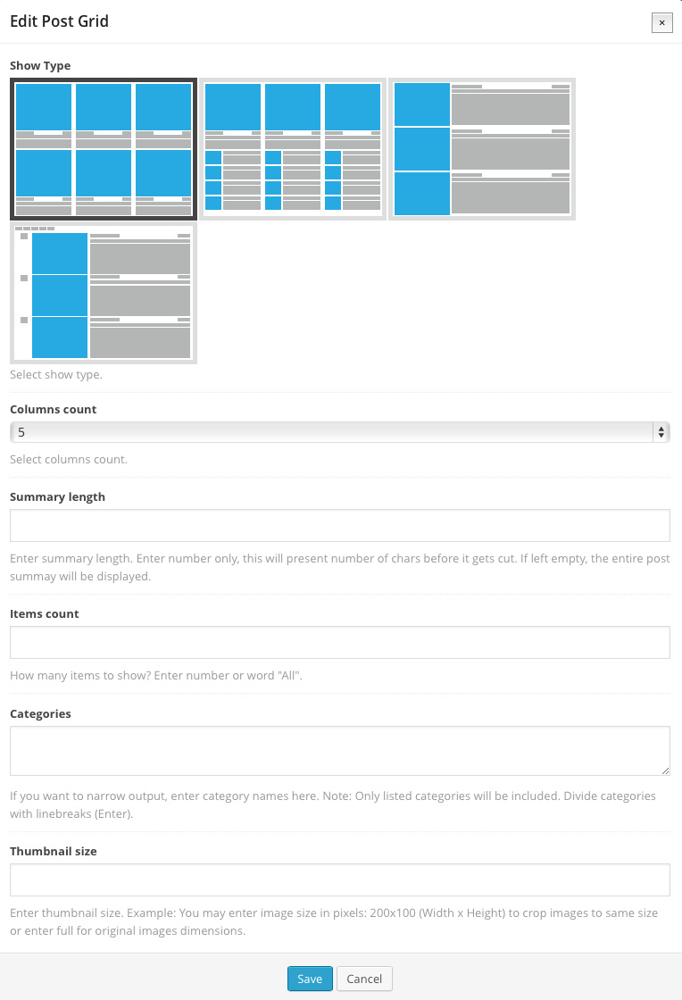

Thank you for buying Meganews, an Amazing Multi-Purpose Magazine WordPress Theme. Make sure to carefully read this documentation, because this will make your website build very easy and quick. Use the menu to scroll to specific section you want to read.
Table of contents
3Set OptionTree 3.1Import Settings.txt 3.2Import ThemeOptions.txt 3.3Importing demo content 4Create Menu
5Creating Categories
6Creating Posts 6.1Creating post categories 6.2Available posts type 6.3Creating posts 6.4Show Category in Menu 7Creating Pages with Posts 7.1Creating Home/Landing page 7.2Creating Daily News Page 8Set Upper Panel above the Header
10Set Under Footer area
11Widgets 11.1Pego Latest Posts Widget 11.2Pego Posts in Tabs Widget 11.3Pego Flickr Widget 11.4Pego Twitter Widget 12Shortcodes 12.1Post section 12.2Post grid 12.3Widgetised sidebar 12.4Post ticker 12.5Testimonials 13Theme Options 13.1General Theme Options 13.2Header Settings Theme Options 13.3Blog/Post Settings Theme Options 13.4Footer Settings Theme Options 13.5Twitter Settings Theme Options 13.6Font Settings Theme Options 14.0Updates
1 Getting Started
1.1 Installing Wordpress
Please click on button below and read all about installation and other stuff. It is really easy.
Support is given only for questions/issues that regard Meganews wordpress theme. Support will so not be given for global WordPress questions, such as “How to install WordPress”. Thanks for understanding.
1.2 Downloaded Package
When you will download Meganews wordpress theme you will get meganews-package.zip file. First you have to unzip it. Then you will see folder called
meganews-package. Inside this folder you
will see files listed below.
Folders
- Documentation
- Meganews
- Licensing
- Meganews.zip
1.3 Install/Activate Theme
Installing theme was never easier. You can use two really simple methods.
Method 1
- Unzip downloaded package with software Winzip or some of your choice
- Then you will see folder called Meganews
- By using some software FTP client (Filezilla) upload this folder to your Wordpress installation. In path wp-content/themes/.
- Go to your Admin (area where did you install core wordpress), Appearance, Themes and you will see Meganews theme. Activate it.
Method 2
- Unzip downloaded package with software Winzip or some of your choice
- Then you will see another zip archive called Meganews.zip
- Go to your Admin (area where did you install core wordpress), Appearance, Themes and click Add New. Then click Upload. Then you will see button Choose, click it and choose zip archive Meganews.zip. Then click on button Install Now.
- Activate it.
2.0 Install Plugins
After you have activated theme, you will get notice for plugins that needs to be installed for theme work properly. This plugins are already included in theme, so you DO NOT need to buy
it, just ACTIVATE them.
Plugins
- Option Tree
- Contact Form 7
You have successfully installed theme. Now go to 3.0 Set OptionTree and start editing it. Please feel free to contact us if you will have any problem or question concerting about theme.
3.0 Set OptionTree
After you activated theme you have to install plugin Option Tree. You can see notice after you activate theme. Just install it and activate it.
In this section you will learn how to set up theme options.
Here is very IMPORTANT that you read next two sections so that all theme options will work properly. First you have to import Settings.txt and save it. Then go back and import ThemeOptions.txt and save it. Please read sections 3.1 and 3.2.
3.1 Import Settings.txt
1. Go to your download package. In folder Documentation is folder called ThemeOptions. Open file Settings.txt with some text editor and copy the content of the file.
2. Go to Admin -> OptionTree -> Import.
3. You can see big input field Settings. Paste into content that you copied it before. -> To import your Settings copy and paste what appears to be a random string of alpha numeric characters into this textarea and press the "Import Settings" button.
3.2 Import ThemeOptions.txt
1. Go to your download package. In folder Documentation is folder called ThemeOptions. Open file ThemeOptions.txt with some text editor and copy the content of the file.
2. Go to Admin -> OptionTree -> Import.
3. You can see big input field Theme Options. Paste into content that you copied it before. -> Only after you've imported the Settings should you try and update your Theme Options. To import your Theme Options copy and paste what appears to be a random string of alpha numeric characters into this textarea and press the "Import Theme Options" button.
3.3 Importing demo content
In order to set up the theme just like our demo is you will need to import file called demoData.xml. This file is found in the download package folder Documentation/DemoContent. To do so go to your Wordpress Admin and in the left menu navigate to Tools -> Import. In the list that pops up select Wordpress and install it's importer. If you have already made an import using this plugin, the last step mentioned isn't required. Once you have this set up you will get a screen with for import: Import Wordpress. Click Choose File and navigate to the demoData.xml. Confirm the import with pressing the button Upload file and import. When a checkbox Download and import file attachments appears be sure to check it. This will import demo data to your site.
3.3.1 Set Main Menu
Next you need to set the main menu. To do so go to your Wordpress Admin and navigate to Appearance -> Menus. Then go to tab called Manage Locations. For the Navigation Menu choose Main Menu. Set the Landing Page
3.3.2 Set Landing Page
Next you need to setup the Landing page. To do so go to your Wordpress Admin and navigate to Settings -> Reading and in the Front page displays set A static page: Front page to Home.
Once you will do so, your site will look approximately like this:
Then you need to go over the settings for categories (colors, show type, ..) as well as all widget areas (all sidebars and footer widgets).
If you haven't imported demo data, go and read the entire documentation on how to build the site.
4.0 Create Menu
In this section you will learn how to create Menu. But first you have to create some CATEGORIES, PAGES AND POSTS. Please read next chapters and see video tutorials.
Please read this section really carefully so that you will be able to create Menu without any further problems. You will see how easy can be. Thanks for understanding.
1. Go to Admin -> Appearance -> Menu. Click on Create a new menu.
2. Write some name for your menu, for example Main Menu.
3. On the right side click on the blue button Create Menu.
4. If you already created some menu before then you will have to manage locations. Click on Manage Locations and in Navigation Menu dropdown select the name of menu that you want it to be your main menu.
5. Then add pages/posts/categories to menu.
6. Save Menu.
If you want to create Megamenu in columns then do this:
For example if you look at the image you can see that we added megamenu to "Features".
Create custom submenu item with no link. We created "Features".
Then again create custom submenu item with no link and drag it below item that you created it before. In our example image is this "Special features".
Then just drag and drop pages/post under this last created item. In our case "Special features". And now you have One column, if you want it more then repeat the procedure.
If you want to create submenu with 4 latest posts from a certain category then do this:
For example if you look at the image you can see that we added Latest posts to Sport Category.
...and online is this.
If you want to add an icon to your menu item then do this:
Open the menu item which you want to add an icon. In the input called Navigation label insert such code before the menu item title:
<i icon-menu-item ICON_CODE></i>
For the ICON_CODE check here: http://fortawesome.github.io/Font-Awesome/icons/
An example of how it can be done:
...and online:
5.0 Creating Categories
In this section you will learn how to create Post Categories.
Please read this section really carefully so that you will be able to create Categories without any further problems. You will see how easy can be. Thanks for understanding.
1. Go to Admin -> Posts-> Categories. You will see some empty fields and some dropdown menus.
2. Name: Write some name for Category.
3. Category color: Select color for category. This will be category background color in menu and on hover tags.
4. Category show type: Here you have two different views to show your posts.
This is TYPE #1
.
This is TYPE #2
.
5. Show latest news ticker? Click into checkbox if you want it to show.
6. Category Featured Post Section: This are those main posts under head. Those fresh news.
This is TYPE #1

This is TYPE #2
This is TYPE #3
This is TYPE #4

This is TYPE #5
7. Category sidebar: Select sidebar that you want it to show on category page. But first you have to create it.
8. Save Category.
6.2 Available posts type
You can create different types of posts. In this section we will describe each of them.
Standard post type
In this type will be featured image, title and some text. You have to set featured image. Recommended image width is 740px.
Image post type
In this type will be featured image, title and some text. You have to set featured image. Recommended image width is 740px.
Video post type
In this type will be video, title and some text. You have to set featured image and insert video url into Video url field. Find it below.
Gallery post type
In this type will be multiple images-slideshow, title and some text. You have to upload multiple images to this post and choose one to be featured.
Audio post type
In this type will be audio, title and some text. You have to set featured image and upload MP3 audio file below.
6.3 Creating posts
In this section you will learn hot to create some posts.
Go to Admin -> Posts -> Add New. Write some title.
2. Write some content. You can use Visual Composer (Click on blue button and you will get more options) or Classic editor. In our preview we used Visual Composer. You can add any available shortcode.
3. On the right side choose post Format. All format are explained in previous section.
4. Select in which category you want to show this post. This is optional regarding if you created any categories.
5. For better SEO write some Tags. On the right side you can see Tags field, just write them and separate them with commas.
6. Set featured image regarding which post Format do you have. Please read previous section.
7. Publish
6.4 Show Category in Menu
1. Please read Chapter about creating menu (3.0) and about creating Categories (4.0).
2. Create Category.
3. Create post and add/select it into category
4. Save post.
5. Go to Appearance -> Menu and add that category to menu.
6. It will show in menu.
Check Video / Mega News - Create category & add it to menu7.0 Creating Pages with Posts
In this section you will learn how to create pages, how to create your website.
Please read this section really carefully so that you will be able to create pages without any further problems. You will see how easy can be. Thanks for understanding.
7.1 Creating Home/Landing page
In this chapter you can read all about creating home page.
1. Go to Admin -> Pages -> Add New. Write some title, for example Home.
2. You can use Visual Composer (Click on blue button and you will get more options) or Classic editor. In our preview we used Visual Composer and multiple shortcodes beacuse is easier.
4. Below you can see Page settings. Find Show page title and set it to Yes. Also you can see images how can your page title looks like. Choose one by clicking on it.
5. Publish your page.
Check Video / Magazine Wordpress Theme - Homepage7.2 Creating Daily News Page
In this chapter you can read all about how to create daily news page.
1. Go to Admin -> Pages -> Add New. Write some title, for example Fresh Daily News.
2. You can use Visual Composer (Click on blue button and you will get more options) or Classic editor. In our preview we used Visual Composer and multiple shortcodes beacuse is easier.
4. Below you can see Page settings. Find Show page title and set it to Yes. Also you can see images how can your page title looks like. Choose one by clicking on it.
5. Publish your page.
Check Video / Mega News - Magazine Wordpress theme - Daily News8.0 Set Upper Panel above the Header
In this section you will learn how to fill upper panel above the header. We have left and right areas.
Please read this section really carefully so that you will be able to create pages without any further problems. You will see how easy can be. Thanks for understanding.
1. Go to Admin -> Appearance -> Theme Options -> Header settings.
2. Upper panel left content: copy code below and insert into area
<ul>
<li><a title="english" href="#">ENGLISH</a></li>
<li><a title="deutsch" href="#">DEUTSCH</a></li>
<li><a title="spanish" href="#">SPANISH</a></li>
</ul>
3. Upper panel right content: copy code below and insert into area
<div class="fl"><a class="upper-panel-link" href="http://trendis.si/wp-themes/meganews/daily-news/">TIMENEWS <span class="icons-upper-panel icon-back-in-time"></span></a></div>
<div class="fl">
<div class="search-wrapper"><a class="upper-panel-link search-from-call" href="#">SEARCH <span class="icons-upper-panel icon-search"></span></a>[wpbsearch]</div>
</div>
9.0 Set Footer
In this section you will learn how to fill footer with widgets. Footer is build with 3 columns. So in each column you can insert any widget.
Please read this section really carefully so that you will be able to create pages without any further problems. You will see how easy can be. Thanks for understanding.
1. Go to Admin -> Appearance -> Widgets. On the right you can see Footer First Column Sidebar, Footer Second Column Sidebar and Footer Third Column Sidebar.
2. Grab your selected widget and just Drag and Drop it into this areas.
3. All widgets are described in chapter 10. Widgets.
10.0 Set Under Footer area
In this section you will learn how to fill under footer. We have left and right areas.
Please read this section really carefully so that you will be able to create pages without any further problems. You will see how easy can be. Thanks for understanding.
1. Go to Admin -> Appearance -> Theme Options -> Footer settings.
2. Under Footer Left Content: copy code below and insert into area
<p>Copyright 2014 Meganews Theme by <a title="Premium Wordpress Themes from Themeforest" href="http://themeforest.net/user/pego/portfolio" target="_blank">Pego Design</a> | All Rights Reserved | <span style="line-height: 1.5em;">Powered by </span><a style="line-height: 1.5em;" title="Wordpress Framework" href="http://wordpress.org" target="_blank">WordPress</a><span style="line-height: 1.5em;">.</span></p>
3. Under Footer Right Content: copy code below and insert into area
<ul>
<li><a href="#">About</a></li>
<li>/</li>
<li><a href="#">Privacy</a></li>
<li>/</li>
<li><a href="#">Contact</a></li>
</ul>
11.0 Widgets
In this section you will get to known with all available PEGO widgets.
Please read this section really carefully so that you will be able to create pages without any further problems. You will see how easy can be. Thanks for understanding.
11.1 Pego Latest Posts Widget
1. Go to Admin -> Appearance -> Widgets.
2. Write some title (optional).
3. Insert number of posts. Default is set to three posts.
4. Category (if none is choosen, all will be taken). You can select any category.
5. Format (if none is choosen, all will be taken). This means that you can show specified format. For example if you want to show only galleries then choose gallery.
6. Showing Type (if none is choosen, Type#1 will be taken). This are two types. Type#1 is with title, category and image. Type#2 is with only image. Try it.
11.2 Pego Posts in Tabs Widget
1. Go to Admin -> Appearance -> Widgets.
Below is an example how we filled it.
2. Please read all about 10.1 Pego Latest Posts Widget, because here is the same thing, but 3x (three times).
11.3 Pego Flickr Widget
1. Go to Admin -> Appearance -> Widgets.
Below is an example how we filled it.
2. Write some title (optional).
3. Insert Flickr username.
4. Insert number how many images to show.
11.4 Pego Twitter Widget
1. Go to Admin -> Appearance -> Widgets.
Below is an example.
2. Write some title (optional).
3. Insert Twitter username.
4. Select number how many twitts do you want to show.
12.0 Shortcodes
In this section you will get to known with all available shortcodes.
Please read this section really carefully so that you will be able to create pages without any further problems. You will see how easy can be. Thanks for understanding.
Where can you use shortcodes? You can use shortcode anywhere within Visual Composer. Few of them are described below. Please read this section really carefully so that you will be able to create pages without any further problems.
12.1 Post section
1. Go to Admin -> Pages -> Add New. And click button Visual Composer.
2. This are those "important" news. For example if you go on our preview home page or some other page you can see this news at the top under the menu. But you can add this news also at the bottom.
3. Click on small image to choose layout.
4. You can set them to latest or random. If you choose random then you will have to choose few news from dropdown.
12.2 Post grid
1. Go to Admin -> Pages -> Add New. And click button Visual Composer.

2. This are post shortcodes used on home page. But you can use theme anywhere.
3. Click on small image to choose layout.
4. Columns count: Select how many columns do you want. Best way is to little play with this layouts and columns.
5. Summary length: Enter summary length. Enter number only, this will present number of chars before it gets cut. If left empty, the entire post summay will be displayed.
6. Items count: How many items to show? Enter number or word "All".
7. Categories: If you want to narrow output, enter category names here. Note: Only listed categories will be included. Divide categories with linebreaks (Enter).
8. Thumbnail size: Enter thumbnail size. Example: You may enter image size in pixels: 200x100 (Width x Height) to crop images to same size or enter full for original images dimensions. In our example we inserted 640x400.
12.3 Widgetised sidebar
1. Go to Admin -> Pages -> Add New. And click button Visual Composer.
2. First you have to create some sidebars. Go to Admin -> Sidebars. Write some name for the sidebar.
3. Go to Admin -> Appearance -> Widgets and Drag and Drop some widgets to created sidebar.
4. Open this shortcode and choose sidebar prom dropdown menu.
5. Sidebar border: Choose on which side do you want border.
12.4 Post ticker
1. Go to Admin -> Pages -> Add New. And click button Visual Composer.
2. Set number of posts. By default 10 latest post will be taken.
12.5 Testimonials
1. Go to Admin -> Pages -> Add New. And click button Visual Composer.
2. First you have to create some testimonials. Go to Admin -> Testimonials. Write some name for the testimonial.
3. In content area write some text. This text is what some person says.
4. Scroll down and write some name and upload image for testimonial person and publish.
5. Go back to shortcode.
6. In the testimonials input insert Testimonials that you created. Divide values with linebreaks (Enter).
What about other shortcodes? There are a lot more shortcodes to use. But they do not need to be described because if you follow directions in popup of shortcode you will know what to do. Else send us an email and we will be happy to help you out.
13.0 Theme Options
To work Theme Options properly you have to read section 3.0, 3.1 and 3.2. If you did not read this sections please go back and read them and all options will work perfect.
If you are asking yourself "Why so little Theme Options?", the answer is simple. All other "stuff" can be set using shortcode elements and their settings.
13.1 General Theme Options
Go to Admin -> Appearance -> Theme Options -> General.
1. Favicon
This is favicon icon that is visible in browser url line. You can create .png image size of 16px X 16px. Then go to http://www.convertico.com and convert it to .ico.
When you will finish this then upload created .ico image.
2. Main template color
Set main template color. Click on it and use color picker. In our preview main color is #184076.
3. Background
You can set background color or upload image. In our preview background image size is 2560x1440px. Also you can set position and repeating...
4. Additional CSS
Enter additional css if needed. CSS you enter will overwrite the theme styles.
5. Additional JS
Enter additional javascript if needed.
6. Admin logo
Upload admin logo so that when you go to admin you have your own logo.
7. Google Analytics tracking code
Enter tracking code for Google Analytics. Enter the entire code with start and end tag for.
8. 404 page
Select the page that will be set for 404 page. You have to create some page. Go check chapter about creating pages.
9. Show breadcrumbs
Check to display breadcrumbs.
10. Breadcrumbs "Pretext"
Enter text that will display at the beginning of breadcrumbs.
11. Make sticky navigation?
Check to make menu stick to the top when scrolling - sticky menu.
13.2 Header Settings Theme Options
Go to Admin -> Appearance -> Theme Options -> Header settings.
1. Logo
Upload your logo. Our logo size is 253x45px
2. Logo for retina displays
Upload logo for retina displays. The logo needs to be twice the size of the basic logo. If not uploaded the basic logo will be taken. So in our example our retina logo is
506x90px
3. Logo width
Enter width for the logo. Enter number only, pixels will be added automatically.
4. Logo height
Enter height for the logo. Enter number only, pixels will be added automatically.
5. Logo margin top
Input margin top for the logo. Insert number only, pixels will be added automatically.
6. Logo margin bottom
Input margin bottom for the logo. Insert number only, pixels will be added automatically.
7. Upper panel left content
Read chapter 8.0.
8. Upper panel right content
Read chapter 8.0.
9. Header Advertisement
Add code for the header advertisement area. In our example we added just basic html code for image.
13.3 Blog/Post Settings Theme Options
Go to Admin -> Appearance -> Theme Options -> Blog/Post settings.
1. Tags caption
Enter caption that will appear before tags.
2. Share caption
Enter caption that will appear before share icons.
3. Written By Caption
Input text that will be used for the authors "Written by" text.
4. Related Posts Caption
Input caption for related posts.
5. Single Post Share Icons
Set which share icons you want to display on the single post item.
6. Single Post Share Mail
Input email which will be used for the mail share icon.
13.4 Footer Settings Theme Options
Go to Admin -> Appearance -> Theme Options -> Footer settings.
1. Under Footer Left Content
Read chapter 10.0.
2. Under Footer Right Content
Read chapter 10.0.
13.5 Twitter Settings Theme Options
First do this steps
1. Login into your Twitter account
2. Go to https://dev.twitter.com/apps and click Create a new application
3. Fill all the given inputs: Name (any name for the app), Description (short description), Website (url of the website where you want to use Twitter) and Callback URL(can be left empty for no Callback)
4. Once you have the input filled up just agree with the Rules, write the Captcha and click Create your Twitter application
5. Details of you app will show up. Scroll down and click Create my access token
7. Click on the tab called OAuth tool. Here you have the data you need to input in the Theme Options
Go to Admin -> Appearance -> Theme Options -> Twitter settings.
Fill all field with data that you geo it in previous steps.
13.6 Font Settings Theme Options
Go to Admin -> Appearance -> Theme Options -> Font settings.
If you are using Meganews version 1.2 or lower you need to do the following steps to get the Font settings into your Theme Options. If you are using theme Meganews version 1.3 or higher, you do NOT need to do this steps...
1. Go to your download package. In folder Documentation is folder called ThemeOptions. Open file Settings.txt with some text editor and copy the content of the file..
2. Go to Admin -> OptionTree -> Import.
3. You can see big input field Settings with some random strings. Mark the entire input field and delete it's content. Once it is empty, copy the content from Settings.txt into it. Once more you will get a random string of alpha numeric characters into this textarea and press the "Import Settings" button.
Make sure you are importing Settings.txt into the Settings area and NOT Theme Options area!
How to add some google fonts?
Go to Admin -> Appearance -> Theme Options -> Font settings.
Go to google webfonts (https://www.google.com/fonts) and choose one font (see image below). Click on icon "Quick use".
1. Google font links
For an example see image below. Copy and paste this entire code into area "Google font links". You can paste multiple different links.
2. Font Family for Main Font
Insert font family for the main font. The input must start with font-family and end with ; .
Main font is used for menu, post titles, headings, post categories, ...
3. Font Family for Secondary Font
Insert font family for the secondary font. The input must start with font-family and end with ; .
Secondary font is mostly used for page and post contents, dates, ... You can use the same font or choose another. So if you choose another font the in the area "Google font links" paste multiple fonts.
14.0 Updates
In this chapter are described all updates that we made on Meganews Wordpress Theme. Please read them and iy you will have any question please ask us.
v1.0 – 28. 3. 2014
- Initial release
v1.1 – 29. 3. 2014
- Small bug issues resolved
v1.2 – 1. 4. 2014
- Mega menu - Columns added
- Support for bbPress added
- Small bugs issues fixed
- Files that have changed: style.css, functions.php, custom-css.php
v1.3 – 4. 4. 2014
- Added option for turning off/on breadcrumbs on any page
- Added option to set the submenu of a category to display 4 latest posts
- Added option to add icons to menu items
- Added option to set main and secondary theme font
- Added option to add any Google Font
- Added new examples for home page layout
- Files that have changed: style.css, functions.php, custom-css.php, header.php, page.php, Settings.txt(import for Option Tree Settings),
demoData.xml (new version of our demo export)
- Files that have been added: functions/custom-page.php css/font-awesome.min.css, css/font/fontawesome-webfont.eot,
css/font/fontawesome-webfont.svg, css/font/fontawesome-webfont.ttf, css/font/fontawesome-webfont.woff, css/font/FontAwesome.otf
v1.4 – 8. 4. 2014
- Added option for having a slider in the Post Section
- Added option to set with which post item(position) should the latest post reading start
- Files that have changed: media.css, flexslider.css, map.php, vc_teaser_grid.php, vc_post_section.php, js_composer.css
- Files that have been added: images/bg_direction_nav1.png, wpbakery/js_composer/assets/images/post-section.type6.png